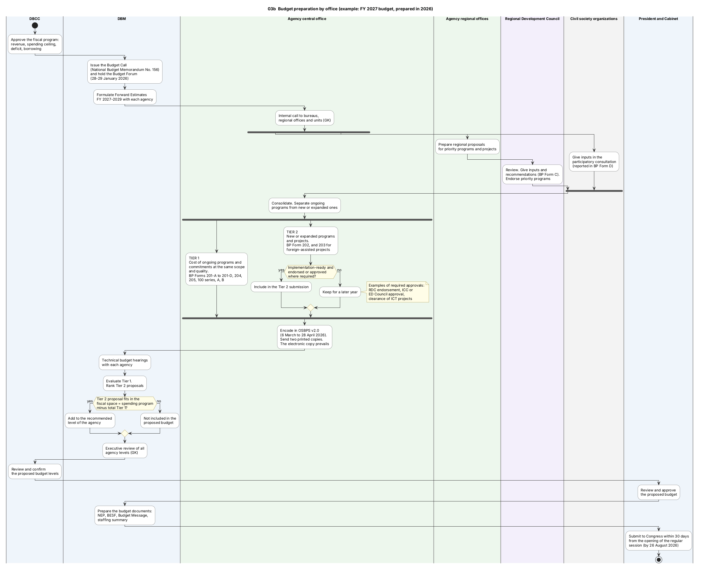

Diagram 03b · PlantUML activity diagram with lanes
Budget preparation by office (example: FY 2027 budget, prepared in 2026)
Question: Which office is responsible for each activity of budget preparation, which activities run in parallel, and where are the decision points?

What the diagram shows
- Question: which office is responsible for each activity of budget preparation, which activities run in parallel, and where are the decision points?
- How to read it: one column (lane) = one office. Diamond = a decision. Thick bar = parallel branches that must all finish.
- Why PlantUML: the two consultations run in parallel and the Tier 2 proposals pass through decisions. Mermaid has no lane diagram for this.
- Sources: [NBM156] for the two tiers, the consultations, OSBPS, the forms and the dates. [PRIMER] for the order of the review steps. [CONST VII.22] for the deadline.
- General knowledge (GK), not opened in a source here: the internal call in the agency and the name "Executive Review Board".
Code

@startuml 03b_budget_preparation_swimlane
' QUESTION THIS DIAGRAM ANSWERS: which office is responsible for each activity of budget preparation, which activities run in parallel, and where are the decision points?
' READING: one column (lane) = one office. Diamond = a decision. Thick bar = parallel branches that must all finish.
' WHY PLANTUML: the two consultations run in parallel and the Tier 2 proposals pass through decisions. Mermaid has no lane diagram for this.
' SOURCES: [NBM156] for the two tiers, the consultations, OSBPS, the forms and the dates. [PRIMER] for the order of the review steps. [CONST VII.22] for the deadline.
' GENERAL KNOWLEDGE (GK), NOT OPENED IN A SOURCE HERE: the internal call in the agency and the name "Executive Review Board".
title 03b Budget preparation by office (example: FY 2027 budget, prepared in 2026)
skinparam shadowing false
skinparam defaultFontName SansSerif
skinparam defaultFontSize 12
skinparam ActivityBackgroundColor #FFFFFF
skinparam ActivityBorderColor #444444
skinparam ActivityDiamondBackgroundColor #FFFDE7
skinparam ActivityDiamondBorderColor #8A6D00
skinparam ArrowColor #333333
skinparam NoteBackgroundColor #FFFDE7
skinparam NoteBorderColor #8A6D00
skinparam SwimlaneBorderColor #777777
skinparam SwimlaneTitleFontStyle bold
|#EEF4FB|DBCC|
start
:Approve the fiscal program:
revenue, spending ceiling,
deficit, borrowing;
|#EEF4FB|DBM|
:Issue the Budget Call
(National Budget Memorandum No. 156)
and hold the Budget Forum
(28-29 January 2026);
:Formulate Forward Estimates
FY 2027-2029 with each agency;
|#EDF7ED|Agency central office|
:Internal call to bureaus,
regional offices and units (GK);
fork
|#EDF7ED|Agency regional offices|
:Prepare regional proposals
for priority programs and projects;
|#F3EEFA|Regional Development Council|
:Review. Give inputs and
recommendations (BP Form C).
Endorse priority programs;
fork again
|#F2F2F2|Civil society organizations|
:Give inputs in the
participatory consultation
(reported in BP Form D);
end fork
|#EDF7ED|Agency central office|
:Consolidate. Separate ongoing
programs from new or expanded ones;
fork
:TIER 1
Cost of ongoing programs and
commitments at the same scope
and quality.
BP Forms 201-A to 201-D, 204,
205, 100 series, A, B;
fork again
:TIER 2
New or expanded programs
and projects.
BP Form 202, and 203 for
foreign-assisted projects;
if (Implementation-ready and\nendorsed or approved\nwhere required?) then (yes)
:Include in the Tier 2 submission;
else (no)
:Keep for a later year;
note right
Examples of required approvals:
RDC endorsement, ICC or
ED Council approval,
clearance of ICT projects
end note
endif
end fork
:Encode in OSBPS v2.0
(6 March to 28 April 2026).
Send two printed copies.
The electronic copy prevails;
|#EEF4FB|DBM|
:Technical budget hearings
with each agency;
:Evaluate Tier 1.
Rank Tier 2 proposals;
if (Tier 2 proposal fits in the\nfiscal space = spending program\nminus total Tier 1?) then (yes)
:Add to the recommended
level of the agency;
else (no)
:Not included in the
proposed budget;
endif
:Executive review of all
agency levels (GK);
|#EEF4FB|DBCC|
:Review and confirm
the proposed budget levels;
|#EEF4FB|President and Cabinet|
:Review and approve
the proposed budget;
|#EEF4FB|DBM|
:Prepare the budget documents:
NEP, BESF, Budget Message,
staffing summary;
|#EEF4FB|President and Cabinet|
:Submit to Congress within 30 days
from the opening of the regular
session (by 26 August 2026);
stop
@enduml